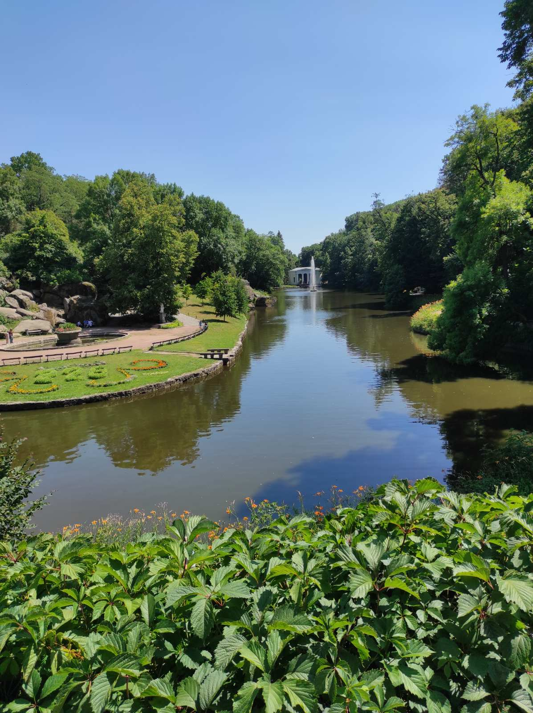

Create mode 100644 img/PDqO0KJ_dqk.jpg create mode 100644 img/Uman1.jpg create mode 100644 img/Uman2.jpg create mode 100644 img/Uman3.jpg Create mode 100644 img/Uman4.jpg create mode 100644 index.html create mode 100644 pages/display.html create mode 100644 pages/reset.html create mode 100644 styles/display.css create mode 100644 styles/normalize.css create mode 100644 styles/reset.css create mode 100644 img/Uman1.jpg create mode 100644 img/Uman2.jpg create mode 100644 img/Uman3.jpg create mode 100644 img/PDqO0KJ_dqk.jpg create mode 100644 img/Uman1.jpg create mode 100644 img/Uman2.jpg create mode 100644 img/Uman3.jpg create mode 100644 img/Uman4.jpg create mode 100644 index.html create mode 100644 pages/display.html create mode 100644 pages/reset.html create mode 100644 styles/display.css create mode 100644 styles/normalize.css create mode 100644 styles/reset.css create mode 100644 img/Uman1.jpg create mode 100644 img/Uman2.jpg create mode 100644 img/Uman3.jpg create mode 100644 img/PDqO0KJ_dqk.jpg create mode 100644 img/Uman1.jpg create mode 100644 img/Uman2.jpg create mode 100644 img/Uman3.jpg create mode 100644 img/Uman4.jpg create mode 100644 index.html create mode 100644 pages/display.html create mode 100644 pages/reset.html create mode 100644 styles/display.css create mode 100644 styles/normalize.css create mode 100644 styles/reset.css create mode 100644 img/Uman1.jpg create mode 100644 img/Uman2.jpg create mode 100644 img/Uman3.jpg create mode 100644 img/PDqO0KJ_dqk.jpg create mode 100644 img/Uman1.jpg create mode 100644 img/Uman2.jpg create mode 100644 img/Uman3.jpg create mode 100644 img/Uman4.jpg create mode 100644 index.html create mode 100644 pages/display.html create mode 100644 pages/reset.html create mode 100644 styles/display.css create mode 100644 styles/normalize.css create mode 100644 styles/reset.css create mode 100644 img/Uman1.jpg create mode 100644 img/Uman2.jpg create mode 100644 img/Uman3.jpg create mode 100644 img/PDqO0KJ_dqk.jpg create mode 100644 img/Uman1.jpg create mode 100644 img/Uman2.jpg create mode 100644 img/Uman3.jpg  create mode 100644 img/Uman4.jpg create mode 100644 index.html create mode 100644 pages/display.html create mode 100644 pages/reset.html create mode 100644 styles/display.css create mode 100644 styles/normalize.css create mode 100644 styles/reset.css create mode 100644 img/Uman1.jpg create mode 100644 img/Uman2.jpg create mode 100644 img/Uman3.jpg create mode 100644 img/PDqO0KJ_dqk.jpg create mode 100644 img/Uman1.jpg create mode 100644 img/Uman2.jpg create mode 100644 img/Uman3.jpg create mode 100644 img/Uman4.jpg create mode 100644 index.html create mode 100644 pages/display.html create mode 100644 pages/reset.html create mode 100644 styles/display.css create mode 100644 styles/normalize.css create mode 100644 styles/reset.css create mode 100644 img/Uman1.jpg create mode 100644 img/Uman2.jpg create mode 100644 img/Uman3.jpg create mode 100644 img/PDqO0KJ_dqk.jpg create mode 100644 img/Uman1.jpg create mode 100644 img/Uman2.jpg create mode 100644 img/Uman3.jpg create mode 100644 img/Uman4.jpg create mode 100644 index.html create mode 100644 pages/display.html create mode 100644 pages/reset.html create mode 100644 styles/display.css create mode 100644 styles/normalize.css create mode 100644 styles/reset.css create mode 100644 img/Uman1.jpg create mode 100644 img/Uman2.jpg create mode 100644 img/Uman3.jcreate mode 100644 img/PDqO0KJ_dqk.jpg create mode 100644 img/Uman1.jpg create mode 100644 img/Uman2.jpg create mode 100644 img/Uman3.jpg create mode 100644 img/Uman4.jpg create mode 100644 index.html create mode 100644 pages/display.html create mode 100644 pages/reset.html create mode 100644 styles/display.css create mode 100644 styles/normalize.css create mode 100644 styles/reset.css create mode 100644 img/Uman1.jpg create mode 100644 img/Uman2.jpg create mode 100644 img/Uman3.jcreate mode 100644 img/PDqO0KJ_dqk.jpg create mode 100644 img/Uman1.jpg create mode 100644 img/Uman2.jpg create mode 100644 img/Uman3.jpg create mode 100644 img/Uman4.jpg create mode 100644 index.html create mode 100644 pages/display.html create mode 100644 pages/reset.html create mode 100644 styles/display.css create mode 100644 styles/normalize.css create mode 100644 styles/reset.css create mode 100644 img/Uman1.jpg create mode 100644 img/Uman2.jpg create mode 100644 img/Uman3.jcreate mode 100644 img/PDqO0KJ_dqk.jpg create mode 100644 img/Uman1.jpg create mode 100644 img/Uman2.jpg create mode 100644 img/Uman3.jpg create mode 100644 img/Uman4.jpg create mode 100644 index.html create mode 100644 pages/display.html create mode 100644 pages/reset.html create mode 100644 styles/display.css create mode 100644 styles/normalize.css create mode 100644 styles/reset.css create mode 100644 img/Uman1.jpg create mode 100644 img/Uman2.jpg create mode 100644 img/Uman3.jcreate mode 100644 img/PDqO0KJ_dqk.jpg create mode 100644 img/Uman1.jpg create mode 100644 img/Uman2.jpg create mode 100644 img/Uman3.jpg create mode 100644 img/Uman4.jpg create mode 100644 index.html create mode 100644 pages/display.html create mode 100644 pages/reset.html create mode 100644 styles/display.css create mode 100644 styles/normalize.css create mode 100644 styles/reset.css create mode 100644 img/Uman1.jpg create mode 100644 img/Uman2.jpg create mode 100644 img/Uman3.jcreate mode 100644 img/PDqO0KJ_dqk.jpg create mode 100644 img/Uman1.jpg create mode 100644 img/Uman2.jpg create mode 100644 img/Uman3.jpg create mode 100644 img/Uman4.jpg create mode 100644 index.html create mode 100644 pages/display.html create mode 100644 pages/reset.html create mode 100644 styles/display.css create mode 100644 styles/normalize.css create mode 100644 styles/reset.css create mode 100644 img/Uman1.jpg create mode 100644 img/Uman2.jpg create mode 100644 img/Uman3.jpg